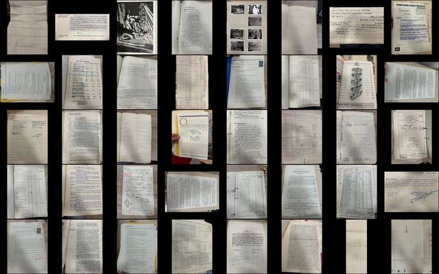
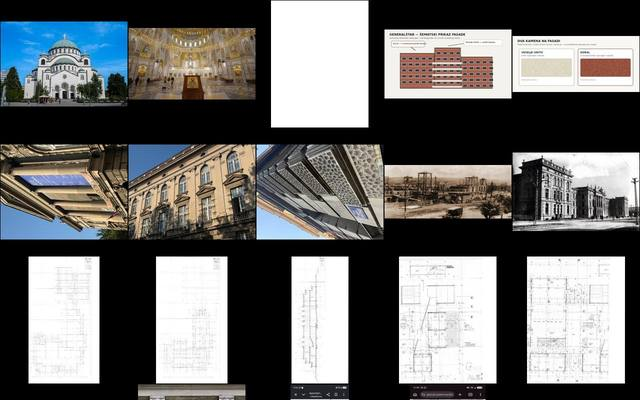
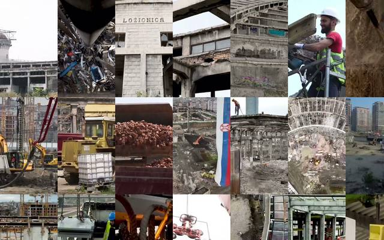

Galerija — fotografije kao prostor
Tri prostora od istih slika. U Slagaonici arhiv B.I.G.Z. stoji u kasetama kartoteke, pročitani listovi izvučeni, datumi na šini 1934–1941. U Stajalištu fotografije timova stoje na mestu svog objekta u Beogradu i u hodniku kroz koji se šeta. U Ložionici 62 sekunde filma o gradnji Okretnice stoje kao kadrovi u prostoru. Slike su sličice; originali ostaju kod svojih vlasnika i u arhivu projekta.

306 listova · 27 kasetaSlagaonica · arhiv B.I.G.Z.Kartoteka štamparije: list stoji u svojoj kaseti, pročitan je izvučen, datiran drži nit do šine vremena.Hodnik kroz arhiv (raspored Galerija), slojevi obrade slike u kodu.Uđi u Slagaonicu →

161 fotografija · timoviStajalište · timoviFotografija stoji na mestu svog objekta; visina je redosled prijema, prazan prsten je tim koji čeka građu.Karta Beograd (OSM © contributors, ODbL). Hodnik po timovima redom prijema.Uđi u Stajalište →

46 kadrova · T04Ložionica · OkretnicaKadrovi filma o gradnji kao prostor: faze, konstrukcija, radnici u kadru.Građa tima T04. Film je montaža, redosled kadrova nije redosled gradnje.Uđi u Ložionicu →
Kako se kreće. Svaki prostor počinje Turom (kamera sama kruži). Prevlačenje mišem okreće, točkić zumira, desni klik pomera; tipka 3 je Hod (WASD), G menja raspored, 4–8 slojeve obrade, H pomoć.
Jedan prst okreće, dva prsta zumiraju i pomeraju. Donja traka bira Turu, Orbit ili Hod; u Hodu džojstik levo dole hoda. Dodir na sliku pokazuje njen podatak. Na telefonu se crta u lakšem režimu da bi kretanje bilo glatko.